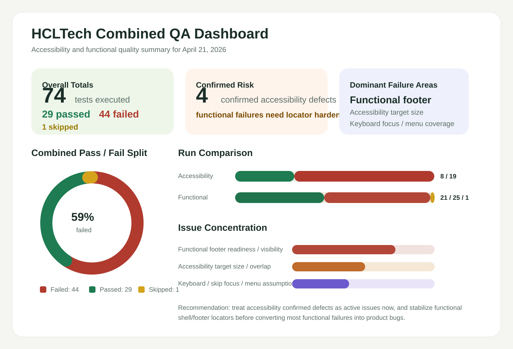

Portfolio Summary
Total tests74
Passed29
Failed44
Skipped1
Confirmed defects4
This dashboard merges the latest accessibility and functional Playwright outcomes for the HCLTech homepage. It provides a single review surface for run totals, confirmed accessibility defects, functional stability, and the next recommended QA actions.

The accessibility suite produced four confirmed defects with repeatable evidence across multiple engines, especially around discernible names, touch target sizing, and skip-link focus.
The desktop menu expectation and the AI `Clear` assertion should be refined before using them as product defects in future triage runs.
A meaningful set of functional checks already passed, including representative nav links, highlights, service CTAs, AI visibility, careers, newsletter, case studies, and analyst reports.
Footer checks failed as a block in `beforeEach`, while some shell and content tests matched hidden duplicate text. That means the functional suite needs one locator/readiness cleanup pass before its failures should be treated as confirmed site defects.
| Area | Current confidence | Main evidence | Recommended next action |
|---|---|---|---|
| Accessibility defects | High | Cross-browser Axe findings plus targeted keyboard failures | File and track the four confirmed defects immediately |
| Functional footer failures | Low to medium | Footer tests timed out together during setup | Fix footer readiness/scroll behavior first, then rerun |
| Functional shell/search/language failures | Low to medium | Late timeouts, page-context closed, hidden-element matches | Tighten locators and add narrower visibility waits |
| Core homepage content and routing | Medium to high | 21 functional passes across key CTA and content flows | Use as the current baseline while stabilizing the rest of the suite |
The accessibility report has the strongest product-defect signal and is ready for direct engineering/design triage.
Fix footer and shell locators, reduce hidden-text matches, and rerun Firefox before opening a broad set of functional bugs.
Shareable report for accessibility run summary and confirmed issues.
Shareable report for the Firefox functional run and failure clusters.
Detailed markdown source of truth for confirmed accessibility defects and triage notes.